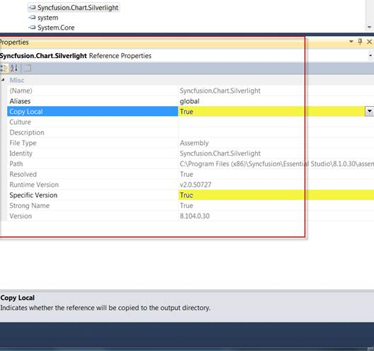

You can upgrade the project in two methods based on the procedure used in your project to reference the Syncfusion assemblies. They are:
· CopyLocal=True
1. Set the SpecificVersion to False.
2. Remove the bin and obj folders in your local project directory.
3. Replace the latest assemblies with the upgraded assemblies in the local folder of your project.
4. Recompile the project.
· CopyLocal=False
1. Ensure that the old Syncfusion assemblies are removed from GAC.
o For 2.0 and 3.5 assemblies:(C:\windows\assembly)
o For 4.0 assemblies: (C:\Windows\Microsoft.NET\assembly\GAC_MSIL)
2. Install the latest Syncfusion assemblies on your machine using the Syncfusion Assembly Manager.
3. Set the SpecificVersion to False.
4. Recompile your project; the latest assemblies from GAC will refer to your project automatically.

Figure 160: Properties Window
Switching the Framework Version While Upgrading the Project
If you want to switch the framework version while upgrading the project, use the MultiTarget Manager from the Syncfusion Dashboard.
After switching the framework version using MultiTarget Manager, remove the bin and obj folders from your local project directory, and then recompile your project.
For more details about MultiTarget Manager, refer to Multi-Target Manager.
Migrating the Resource Files
Follow the below stepd to migrate the resource files (.resx) file of your project to the newer version:
1. Open Start->Syncfusion->Essential Studio x.x.x.x->Utilities->Migration->ConvertResx(Framework 2.0,3.5 or 4.0).
2. Click the Choose ResX Files to Convert.
3. Select the Resx files you wanted to convert.
4. Click Start Converting Files.
5. After the conversion, the new Resx files will have the same name as the original files. Copies of the original files will have the .old suffix added to their names.
For more details about the Convert Resx utility, refer to ConvertResxUtility